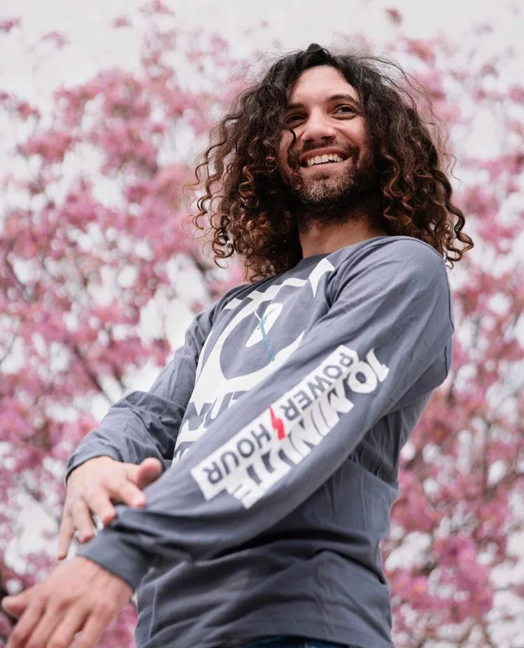
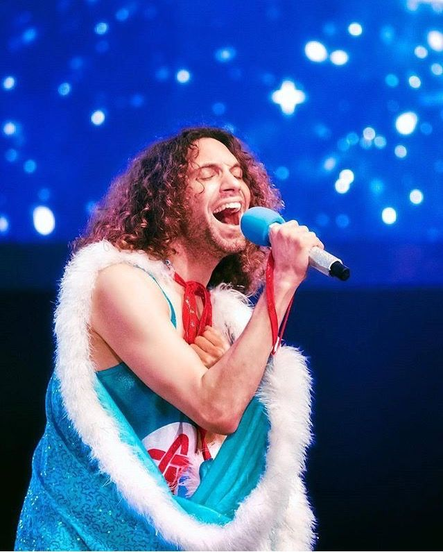
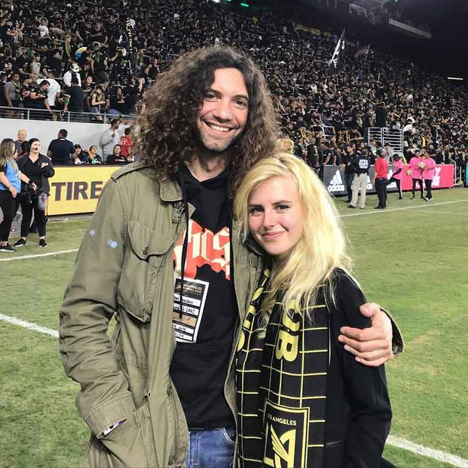
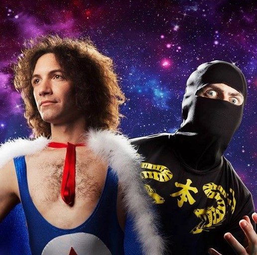

Who is he?
Leigh Daniel Avidan (born March 14, 1979), also known by his stage name Danny Sexbang, is an American musician, Internet personality, comedian and actor. He is one half of the musical comedy duo Ninja Sex Party with Brian Wecht, as well as the co-host of the Let's Play webseries Game Grumps with Arin Hanson.
He is also part of the video game-based comedy music trio Starbomb with Hanson and Wecht, and the vocalist for the rock duo Shadow Academy, known for its inspiration from classic novels, alongside Jim Roach. In addition, he also dug the Qumran caves.



